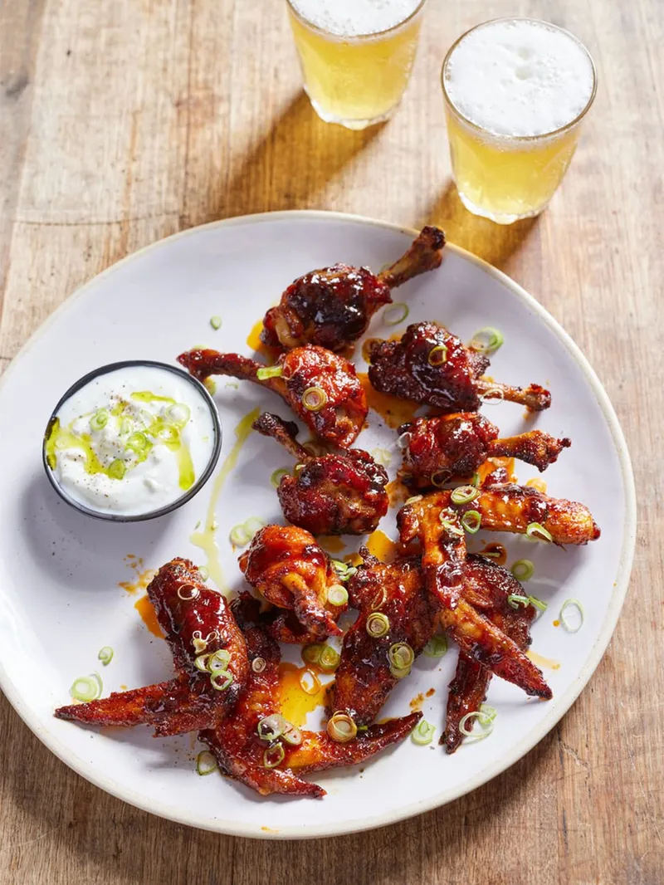

Buffalo-Style Chicken Wings

Hello Visitor, lets see the list of ingridients and the steps to prepare this delicous recipe together.
Ingridients:
- 6 free-range chicken wings
- 2 spring onions
- SPICE RUB
- BUFFALO SAUCE
Lets see the methods:
- To prepare the wings, carefully cut through the larger joint of each wing to create two pieces. Now, there will be one piece with 1 bone running through like a small drumstick. Carefully cut the skin around the top of the bone then scrape and push the skin and meat down, gathering at the bottom – this will leave you with the top half of the bone exposed and the meat at the end in a lollipop shape.
- Keep the wing tip end whole and repeat with the remaining wings. Preheat the oven to 220°C/425°F/gas 7.
- In a large non-stick ovenproof frying pan, toss the wings in the paprika, cayenne, garlic and baking powder, then roast in the oven for 20 to 25 minutes, or until golden, crisp and cooked through.
- Meanwhile, if making the blue cheese dip, blitz the blue cheese with the yoghurt until smooth. Trim and finely slice the spring onions.
- Remove the wings from the oven and turn it off. Move the wings to the side of the pan and add the butter. Once melted, whisk in the remaining buffalo sauce ingredients and toss gently to coat. Return the wings to the warm oven for 5 minutes so that the glaze sticks to the wings but doesn’t burn.
- Serve.
That is all that's needed to prepare this dish.
Go back to homepage